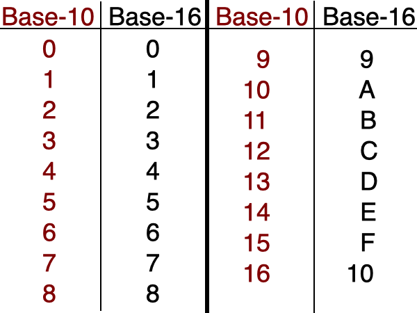
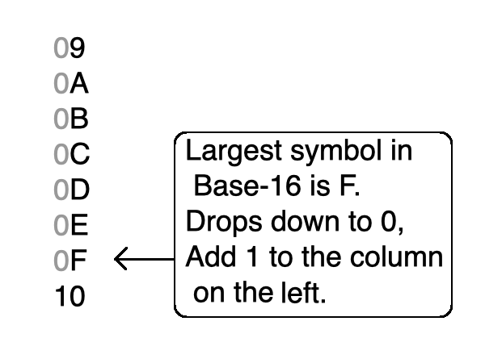
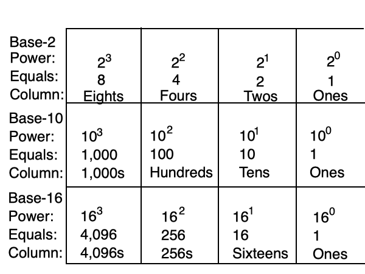
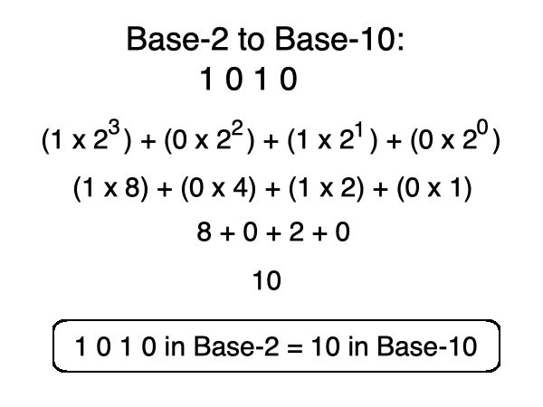
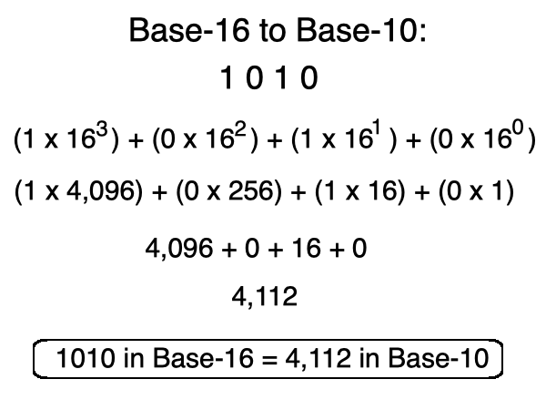
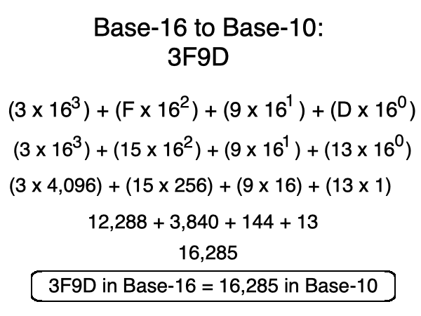
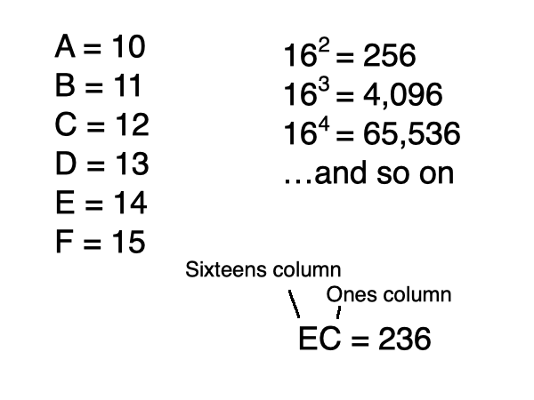

you smart good
Programming Concepts
Introduction to hexadecimal
Congratulations on completing your second review!
Now let's take a break and have a party!
. . . okay party time's over. Get back to work!!
As you've probably noticed, storage is extremely important in programming. We must constantly be aware of the limited amount of space that we have to work with.
Let's look at the number ten for a minute . . .
If we want to write ten in binary, it's 1 0 1 0. That's four columns just to write one number!
Even in Base-10, 10 takes up two columns, which is less than binary, but still, what if it could be condensed further?
This thought process led to the creation of a larger storage number system . . .
Welcome to hexadecimal!
Hexadecimal is another number base that is commonly seen in computer programming. There are 16 symbols in hexadecimal; therefore, this is a Base-16 number system.
Zero through nine is still represented with the same symbols used in Base-10 (0-9). But when we get to ten, it start to look a little different.
ten is represented with A, eleven is represented with B, twelve is C, thirteen is D, fourteen is E, fifteen is F.

Now we are going to take the concepts we learned in Base-2 and Base-10 and apply them to Base-16!
If we look at the image above, we see that 16 in hexadecimal is 10.
This is because the largest symbol in Base-16 is F, and we know from previous lessons that when you try to add 1 to the largest symbol (F), you must drop it to the smallest symbol (0), then add 1 to the column on the left.

Remember how important it was to know the powers of 2 in binary? Let's take a moment to look at this chart showing the powers of 16.
The numbers get pretty big pretty quickly, so it's okay to feel a little overwhelmed by this, but we'll keep working on it so you will become more confident as we keep going.
And feel free to use a calculator. I know I will!

We know about the places in Base-10 (ones, tens, hundreds, etc.) and we know about the columns in Base-2 (ones, twos, fours, etc.). Now let's learn about Base-16.
In the past, we've gotten the number columns from the powers of the base. For example, 23 is 8, so that column is the eights column.
It works exactly the same with Base-16. Remember, we always start on the right with the exponent 0.
So, the first column will be 160. And don't forget, anything to the power of 0 is 1! So the right-most column is still the ones column.
Next we have 161, which is 16. We can keep going using the chart above to figure out how the columns work.

Let's revisit how to convert a Base-2 number to Base-10. Let's say we have the Base-2 number
1 0 1 0.
How do we convert this to Base-10? We use scientific notation and the powers of 2 to determine how much value each column has.

Now let's say we have the exact same sequence of numbers, but instead of Base-2, we're working with Base-16. If we convert
1010 in Base-16 to Base-10, what would its value be?
We are going to use the exact same methods that we used when we were working in Base-2. Be aware, however, that because we are now in Base-16, the base for scientific notation now changes to 16.
Besides this, the process is identical.

Take a look at another conversion. Let's convert this from hexadecimal to Base-10:
3F9D
Remember in hexadecimal, A-F are used as numerical symbols. For this specific conversion, we will be using D and F.
D is 13 and F is 15.
Let's use this information to follow the same steps as above, using scientific notation to find the value of each column, then adding all the columns together.
With this, we can find that 3F9D in hexadecimal converts to 16,285 in Base-10!

Before taking the quiz, let's make a list of everything we went over in this section:
1. The symbols A-F and their values.
2. The powers of 16, as well as the columns.
3. How to convert Base-16 to Base-10.
Again, feel free to use a calculator in this section. I don't expect you to know 165 off the top of your head.
